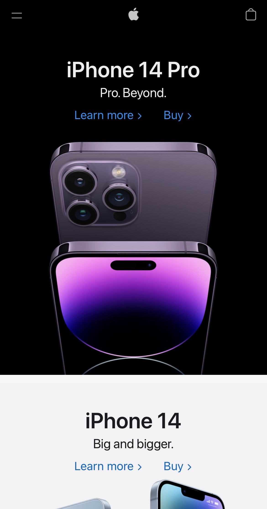
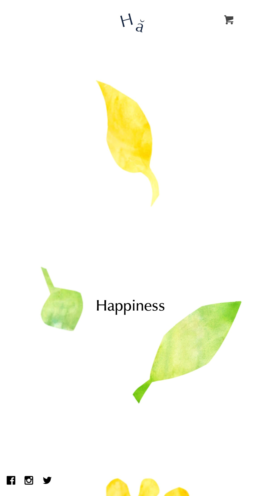

Visual Hierarchy
Apple
apple.com The Apple website is a great example of visual hierarchy because the iPhone is the very first focus of the website, the headline is the second, followed by a paragraph, and then the call to action, and the last is the navigation. This really shows how they really took time planning on hierarchy of the elements.
Rule of thirds
Delassus Group
delassus.comI think the Delassus Group shows well how to use the Rule of Thirds in a website. The oranges are not exactly at the center of the screen but were put on the sides or the intersections of the rule of thirds grid. This definitely makes a website attractive and not “bland and predictable” if all images are put on the center.
Whitespace and Clean Design
Happiness Abscissa
happiness-abscissa.myshopify.com This is a perfect example of Whitespace and clean design. The leaves images and few words and logos make the site simple and easy to the eyes, and makes you want to scroll down and check the website. The white space keeps the site clean and inviting.